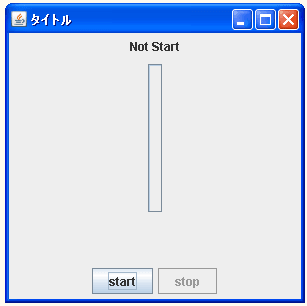
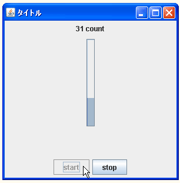

- Home ›
- Swing ›
- JProgressBarクラス
進捗バーの方向を設定する
広告
進捗バーはデフォルトである横方向の他に縦方向に作成することが出来ます。進捗バーの方向を設定するにはコンストラクタで設定する方法とメソッドを使って設定する方法があります。
まずコンストラクタで設定する方法を確認します。次のコンストラクタを使用します。
JProgressBar public JProgressBar(int orient)
指定した方向 (SwingConstants.VERTICAL または SwingConstants.HORIZONTAL) で進捗バーを作成します。デフォルトでは、ボーダーはペイントされ、進捗文 字列はペイントされません。初期値および最小値は 0、最大値は 100 です。 パラメータ: orient - 進捗バーの目的の方向 例外: IllegalArgumentException - orient の値が無効な場合
引数には進捗バー進捗バーの方向を表すint型の値を設定します。設定出来る値は次の通りです。
| 値 | 進捗バーの方向 |
|---|---|
| JProgressBar.HORIZONTAL | 水平方向 |
| JProgressBar.VERTICAL | 垂直方向 |
実際の使い方は次のようになります。
JProgressBar bar = new JProgressBar(JProgressBar.VERTICAL);
メソッドを使って設定する
既に作成されたJProgressBarクラスのオブジェクトに対してメソッドを使って方向を設定することも可能です。設定するにはJProgressBarクラスで用意されている「setOrientation」メソッドを使います。
setOrientation public void setOrientation(int newOrientation)
進捗バーの方向を newOrientation (SwingConstants.VERTICAL または SwingConstants.HORIZONTAL) に設定します。デフォルトの方向は SwingConstants.HORIZONTAL です。 パラメータ: newOrientation - HORIZONTAL または VERTICAL 例外: IllegalArgumentException - newOrientation が 不正な値の場合
引数には進捗バーの方向を表すint型の値を設定します。設定出来る値はコンストラクタの場合と同じです。
実際の使い方は次のようになります。
JProgressBar bar = new JProgressBar(); bar.setOrientation(JProgressBar.VERTICAL);
サンプルプログラム
では簡単なサンプルを作成して試してみます。
import javax.swing.*;
import java.awt.BorderLayout;
import java.awt.event.*;
public class JProgressBarTest3 extends JFrame implements ActionListener{
Timer timer;
JButton startButton;
JButton stopButton;
JProgressBar bar;
JLabel label;
int count;
public static void main(String[] args){
JProgressBarTest3 frame = new JProgressBarTest3();
frame.setDefaultCloseOperation(JFrame.EXIT_ON_CLOSE);
frame.setBounds(10, 10, 300, 300);
frame.setTitle("タイトル");
frame.setVisible(true);
}
JProgressBarTest3(){
count = 0;
label = new JLabel("Not Start");
JPanel labelPanel = new JPanel();
labelPanel.add(label);
startButton = new JButton("start");
startButton.addActionListener(this);
startButton.setActionCommand("start");
stopButton = new JButton("stop");
stopButton.addActionListener(this);
stopButton.setActionCommand("stop");
stopButton.setEnabled(false);
JPanel buttonPanel = new JPanel();
buttonPanel.add(startButton);
buttonPanel.add(stopButton);
bar = new JProgressBar(JProgressBar.VERTICAL);
bar.setValue(0);
JPanel barPanel = new JPanel();
barPanel.add(bar);
timer = new Timer(100 , this);
timer.setActionCommand("timer");
getContentPane().add(labelPanel, BorderLayout.PAGE_START);
getContentPane().add(buttonPanel, BorderLayout.PAGE_END);
getContentPane().add(barPanel, BorderLayout.CENTER);
}
public void actionPerformed(ActionEvent e){
String cmd = e.getActionCommand();
if (cmd.equals("start")){
startButton.setEnabled(false);
stopButton.setEnabled(true);
timer.start();
}else if (cmd.equals("stop")){
startButton.setEnabled(true);
stopButton.setEnabled(false);
timer.stop();
}else if (cmd.equals("timer")){
label.setText(count + " count");
if (count >= 100){
startButton.setEnabled(true);
stopButton.setEnabled(false);
timer.stop();
bar.setValue(count);
count = 0;
}else{
count++;
bar.setValue(count);
}
}
}
}
上記をコンパイルした後で実行すると次のように表示されます。

縦方向にした場合、進捗バーでは下から上へ棒が伸びていくことで進捗状態を表します。

( Written by Tatsuo Ikura )
Profile

著者 / TATSUO IKURA
初心者～中級者の方を対象としたプログラミング方法や開発環境の構築の解説を行うサイトの運営を行っています。